Short Reports 2004
West Fork Foss River, 12/23/04}
There are only trace amounts of snow to Trout Lake, and increasing snow to Copper Lake, although a boot track exists to there. Snowshoes would be desirable beyond. The weather was good, with great views at Copper Lake. I would have loved to continue on to Big Heart Lake! 4 hours car to car.
Granite Mountain, 10/27/04}
Carlos Pessoa and I took advantage of the great weather this morning to get in a “Dawn Patrol” hike. Somewhat delayed by his fascinating guitar and keyboard setup at home, we eventually were hiking at 6:00 am. The trail was dry, the air was crisp, and there was hoarfrost pushing up on the edges of the trail like crystaline entities. Once above the trees there was a dusting of snow on the trail. Golden sunrise found us in a frozen bog with the Lookout building visible above. We took a time-consuming steeper line up deep snow drifts on the final slope, discovering the much better “real trail” on the descent. We felt like free men standing on the balcony of the Lookout, sipping drinks and admiring a snowy group of peaks. Hiking down, we encountered three parties going up. Most wise we all were on this blue sky day!
Mount Dickerman, 10/24/04}
On the spur of the moment, I left the house for a hike up Mount Dickerman. It had been a few years since I was there, and I thought I’d see what the first big snowstorm had done to the high country. I started hiking at 1:30 pm, through damp but pleasant forest. The sword ferns looked exceptionally dark green and healthy. Once above the dense forest slope I saw patches of blue sky, and unobstructed views across the valley to Big Four Mountain, Vesper Peak, Sperry and Del Campo, the latter partially shrouded in cloud. The light was quite dramatic, because a dense gray band of cloud over those mountains shaded and blackened them, but enough sun could peak through to bath me in sunshine. The snow became deeper, and I appreciated the packed-in trail as depths reached two feet below the summit. A quick look around at peaks to the south (Sloan looked especially nice, though beshrouded), then it started to snow on me. Clouds engulfed the upper slopes and I hiked away, back to the deep valley at 5:15 pm.
Granite Mountain, 10/14/04}
I went for a quick hike up Granite Mountain in the morning, but I took my natural history book to try and identify some plants. Where the forest opened up to brush, I got out the book and started trying to identify things. Before long, I knew I wouldn’t be going any further: there was too much to name! I saw Red Alder and Braken and Swordfern and Maidenhair fern and Mountain Lover and Snowberry and Cascara and Big Leaf Maple and Vine Maple and Western Red Cedar trees and Douglas Fir trees and Salmonberry. Now if I can only remember all those names! I ran down the trail with a better appreciation of the woods I usually tromp through unthinkingly.
Index Climbing, 10/02/04}
Robert Meshew and I went for a quick morning climb. We warmed up on the finger crack pitch of Aries, then I got scared trying to lead the chimney (which seemed so easy last time!). Both of us backed off of that, so Robert led around a different way, and I finished the climb with the cool undercling traverse to the chain anchors. I eventually realized the mistake in the chimney: we needed to place some gear high in the back, then come back down and start chimney-climbing well out in the wide slot. It feels really insecure trying to begin climbing it when you are lodged deep in the back. Oh well, next time! After this, Robert led the first pitch of Princely Ambition, doing a great job on his first time. I led pitch 2, dirty but still fun. Then Robert led Godzilla and I followed. A great morning at Index!
Index Climbing, 9/21/04}
Carlos’s brother had never gone rock climbing before, so the three of us headed out early in the morning for a quick jaunt up Great Northern Slab. He did really well, and is probably hooked for life! I know I was…
Index Climbing, 8/29/04}
Mardi had never climbed at Index, so Bob and I took her out there for a fun climb of the Great Northern Slab route. She did super well! Actually, it seemed like Bob was more inclined to feel wierd about the exposure while rappeling and stuff like that than she was :-). We did the usual three pitches, climbing the bolted slab variation on the last one. Then just for fun we climbed the 2nd pitch of Aries: the 5.8 stellar finger crack that leads to the chimney. On the way home Bob said “so are you going to put this on your little web site?” He can be such a mom sometimes!
Index Climbing, 7/22/04}
Rudy and I were back (3 weeks later?) for a quick morning climbing fix. He led Japanese Gardens to the mid-pitch double bolt anchor as a warm up. I top roped it, found it fun and fairly easy - a great warm up. Leaving gear in place, he re-led, then reached the first crux after a tricky lieback/offwidth section. Getting good gear above a bulge, he set off on shallow cuticle jams (5.11b), and lobbed off just as his right hand reached a great fingerlock. It was an exciting 20 foot fall, which woke him up nicely. The tiny TCU he placed in a finger pocket held. After sending the move, he reached the second crux (5.11c) and had a similar problem, again overcome after one fall.
Now I had to somehow climb it, yikes! I repeated the first section, finding it harder now that the sun was beating on the crag. I had some trouble moving from lieback to offwidth, but got it on the second try. The first crux was incredibly hard I thought. I flailed around greatly, eventually “grokking” the 2-3 moves required to reach a great finger pocket. A bit tired, I climbed a hand crack up to a big stem, then positioned for the final crux - a real monster! I made the first moves but never did figure out the next two or three needed to get into a solid crack above. Once on the ground Rudy could explain the kind of dynamic nature of it - hands on a shallow ledge, walk your feet up quickly and lunge for the crack. Sounds so easy now! (yeah right). A few more moves reached the anchor. What a great climb, something to work on for me definitely!
The wall was baking even at 9 am, so we repaired to the Inner Wall. Rudy gave me beta for Toxic Shock (5.9), and I climbed up, a little frazzled from the previous hard climb. Nonetheless, I found my kidneys turning yellow from the shock of steep liebacking, then an awesome, bomber vertical hand crack. Rudy climbed it, then I scrambled the variation 5.8 start to the route. Halfway up Rudy tossed me a rope to tie on to so I wouldn’t hit the ground if I fell. Good idea, oh wait, that was my idea! It’s a great variation, definitely do both.
Off to work, sad to leave the granite planet!
Index Climbing}
Rudy R. and I went to Index for a few quick hours before work. Rudy led Sagittarius (5.9), a climb I’d wanted to do for a while but was intimidated by. It was really fun: a few lieback moves to a hand crack with good gear, then easy face climbing under the long roof to bolts. Then an awkward off-width crack/chimney that leads to more hand cracks and a lieback to the bolted belay. Awesome!
After this, Rudy gave me some beta for Roger’s Corner, and I led the short 5.7 first pitch and 5.9 second pitch as one. The second pitch went through a section of grainy rock, then reached a stellar series of cracks below a tree anchor. From here, Rudy led Breakfast of Champions (5.10a). I followed, enjoying the insecure opening moves and bomber hand-jams above. We thought it was getting late, so made rappels to the ground and drove away. But we actually had time for one or two more climbs! Next time we’ll bring a watch to the cliff. A great first climb with Rudy!
Mount Si, June 17, 2004}
Went for a quick hike up Mount Si after work. I made it to the top of the Haystack 1 hour 35 minutes after leaving the car, and back down in 45 minutes (after a nice long rest on top!). There is a lot of work being done in the first 2 miles of the new trail, many new steps.
Index Climbing, June 3, 2004}
Carlos had never been climbing outside, so I took him to Index to climb Great Northern Slab. He did very well on the climbing. On the last pitch, I chose to follow a line of 3 bolts on the left of the slab rather than my usual “pilgrim’s progress” up a shallow crack on the right to the trees. The bolts were fun, probably about 5.7 or so in difficulty. For Carlos, untutored in slab climbing, this was the hardest part. He worked mightily to master the moves, eventually arriving at the little forest that marks the top of the climb. We met cc.com friends “Greg W” and “Snugtop” here, teaming up for a double rope rappel down Velvasheen to the iron bolts. Alas! the ropes were stuck fast somehow. We executed some shinanigans to eventually free them and continue our descent. Another great evening at Index!
Snoqualmie Mountain, May 22, 2004}
Needing some exercise but unable to get inspired by the health club, I resigned myself to a rainy ascent of Snoqualmie Mountain. I walked into the fog and clouds via the old trail near the Snow Lake trailhead, taking a left turn 1000 feet up for Snoqualmie rather than Guye. I was surprised to see a guy on his way down near here. The clouds were thick but it wasn’t raining, which was nice. About 400 feet below the summit, I met a party of two. We sat on rocks at the summit and talked about climbs and hikes until it started snowing hard. They went to climb Guye Peak, and I trundled my way down snow, slick roots, rocks and trail.
Exit 38, April 29, 2004}
Josh and I unwittingly hiked past the Amazonia and Club Paradiso walls, failing upwards all the way to the Peannicle. We saw a few sad rocks along the way, all dripping and unattractive, so I guess it was just as well. We climbed “Peanut Brittle,” finding it a bit harder than the 5.6/5.7 rating it gets in the guidebook. Then “Killer Bob,” which had enjoyable juggy holds to escape an overhang (5.9). Finally, we climbed “Gallivant (5.10a),” which was the longest route, with interesting moves on a steep slab to a vertical headwall. I belayed Josh from the top of this one, which provided a great view of the fertile valley below. A rappel, then nice jog back to the trailhead. “Be gentle, but be vigilant” was the catchphrase of the morning, invented from a meaty stew of conversation about public servants, irate laypeople, a lack of toilet paper, and egregious affronts to propriety.
Wallace Falls, April 26, 2004}
I went for an evening hike/jog to the Upper Falls. It took me about 50 minutes to reach it. I enjoyed the pleasant forest trail with scenic views looking down to the river. The falls had a huge volume of water. At the middle falls on the way down I looked out at the golden valley.
Index/Lake Serene, April 18, 2004}
I hadn’t been out in a while. I went to the Lower Town Wall and quickly soloed the first two pitches of “Great Northern Slab.” It started to rain, so I rappelled down instead of climbing the last pitch. Next I went to the Lake Serene trailhead, and made the hike up to the Lake. There were still good local views, but the rain increased steadily. I took the old trail, amazed at how icy-slick the roots and logs become in the rain. Walking through a bit of snow at the top, I reached the lake then accidentally poured Gatorade all over my pack. I thought I put the cap back on. The Norwegian Buttresses looked pretty amazing, what a great and horrible climb they would make! On the way down I wished for a rain jacket, or maybe crampons for the icy logs. It took me 35 minutes on the climb, then 2.5 hours for the hike up and back. A great afternoon was had!
Lake 22, April, 2004}
Carlos told me that this was a great easy hike with spectacular views from the lake, so when Kris and I had the afternoon free, I jumped at the chance for us to go there. We started hiking around 2 pm, and after a long walk through scenic forest, found ourselves switchbacking up an open hillside. Kris named a mountain across the valley “Mount Cous-cous.” I approved heartily. Once back in the forest, we continued on packed snow to the lake outlet. Indeed, the cliffs were spectacular, with a few waterfalls cascading down to the lake. Kris saw her first avalanche here, when blocks of snow fell away from a high portion of the wall. The rumbling and roar continued for about 30 seconds. A family teetered across a log to a trail on the other side of the outlet. The sun was warm, and Kris enjoyed her packet of “Corn Gone Wrong.” We headed down, talking about all sorts of things. We stopped to rest on a bridge over the raging river. It was a fun trip!
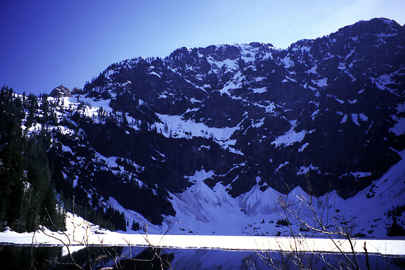
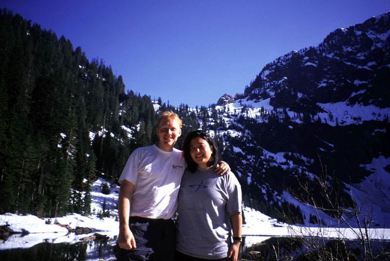
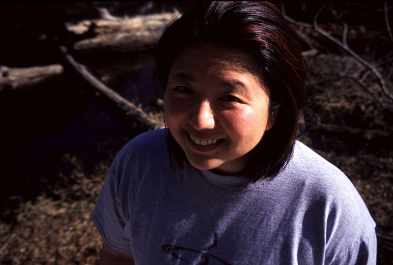
Index Climbing, April 2, 2004}
Peter Chapman and I got up early for a morning climb at Index. We decided to climb 2 pitches of Princely Ambitions (5.10a). I really enjoy this climb. For me it is a little scary, especially early in the season. The individual moves are not strenuous, but require balance and a willingness to commit. The step-to-the-right move below the hand traverse, and then the hand traverse itself are the mental cruxes. This time, I placed a very good medium nut at the start of the hand traverse - Peter almost had to leave it while cleaning. I’d never placed anything there before successfully. Here goes! It’s amazing how the vertical wall begins cutting away beneath you as you traverse. A patch of running water made for some damp rock and some anxiety midway. It was great to pull up and place an orange Metolius cam on the other side. Peter enjoyed his first time on the great pitch. He continued for the lead of pitch 2, rated 5.8. It climbs a crack and shallow chimney for 30 meters, the rock kind of grainy near the top. He found it instructive and very satisfying. The sun felt like like summer on the peaks around, crisp in the still, cool air.
Vantage Climbing, March 20, 2004}
Peter, Kim and I went out for some climbing. We narrowly escaped a car accident on the way when a truck cut off a car in front of us. That car wildly swung across the interstate, barely escaped rolling, and came to a stop after 360 degrees in the median. We rode right through their path, also coming to a gentle stop in the median. I helped push the guy’s car out of the median where it had dug itself in. He was lucky, we were lucky - the truck that cut him off should feel lucky too. So anyway, Peter led “Chossmaster” (5.7) as one long pitch, a good warm up, but Kim was disconcerted by the different character of the rock from her plastic medium of the last few months! Then I got fired up to go crack climbing, so I led “Tangled up in Blue (5.9),” having to rest on the rope twice, not used to the complexity of placing gear and actually climbing! That tired me out, so I rested while Peter and Kim climbed “Vantage Point (5.8),” a great arete climb they both enjoyed. Then I led “Crossing the Threshold (5.8),” a considerably easier crack climb, but really fun. Kim followed it, maybe it was her first 5.8 crack climb? The exit was really loose and ugly, we had to be very careful getting up to the plateau. Theron and Justin stopped by to say hello, and we finished by Peter leading “Party in your Pants (5.8),” aka “Twin Cracks.” I followed it. I’m always giving him a hard time for his hexes, but he made some great placements with them I must say. Alas, we had to go home early for a dinner appointment. Really fun time though, thanks guys!
Snoqualmie Pass Skiing, March 12, 2004}
Friday night Kris and I skied for a few hours at Summit West. Pretty fun, but kind of icy too.
Snoqualmie Pass Skiing, March 7, 2004}
I came back with Kris Sunday afternoon. Despite constant rain (yuck), we had a good time. She improved her skiing technique dramatically, and learned to go faster yet relax more. Finally we quit at 5 pm, totally soaked but pleased. We stayed at Summit West.
Snoqualmie Pass Skiing, March 6, 2004}
I had from 8 until noon, so I decided to visit the Snoqualmie Pass ski area. I started at Summit West, and gradually worked my way over to Summit East, skiing some runs multiple times for fun. The most crowded lift was at Summit East, so pretty soon I started back. Fun time, and I thought Kris would like these slopes better than Crystal Mtn since there are more uniform beginner slopes. Pretty nice weather, including some sun. The views of Guye Peak, Commonwealth Basin and the Gold Creek valley were very pretty.
Oahu Hike - Lanipo Ridge, Feb 27, 2004}
I had the morning free to hike, so I hiked/ran up the Lanipo Ridge trail in a strong wind. There was supposed to be a big storm coming. The trail was beautiful, with a steep drop-off on either side of the narrow ridge for it’s 3.5 mile length. There were many ups and downs. Eventually I entered a cloud, so my views of windward-side Oahu were obscured. I hiked down, then the downpour arrived: horizontal sheets of rain got me soaked. Good trail!
Cougar Mountain Run, Feb 22, 2004}
In the evening I went for a run from the Wilderness Cliffs trail up to Anti-aircraft Peak and back. It was a nice sunset as I returned to the car.
Crystal Mountain Skiing, Feb 20-21, 2004}
Kris and I stayed two nights at Crystal Mountain for skiing. I bought a new book about it and learned some great new techniques. Kris had her new skis, and they were taking some adjustment to learn about. She also took a lesson, but it was disappointing. Also, snowboarders bumped into her and knocked her over twice on one run, so we were both kind of unhappy. The next day I got up early and skied, doing better at making many short turns. Then Kris came out and again had a challenging time. We decided to go home a day early, as she was really sore. Oh well, better luck next time!
The Tooth, Feb 14, 2004}
I will move this to a larger page when I get pictures. Theron, Peter and I had an adventurous day near the Tooth. First breaking trail up there, then climbing a steep gully to the notch (Theron’s fingers froze painfully as he led the way near the end), then the first pitch of the Tooth. I climbed with crampons and ice tools in a cold wind and snow. About 40 feet up I came to an impass I could only protect with a #3 Camelot, but I didn’t have the gear. The moves (torqueing my tools deep in a crack) felt sketchy enough that I couldn’t do it without some protection. Without the requisite rucksack full of courage, I was spent. Theron and Peter were cold standing in the wind, so we rappelled down the gully and went for some ice climbing on the other side of the bowl. Peter led a great pitch (WI3+ by his lights) up vertical bulges of yellow ice to an awkward snow/brush topout. We all top-roped the pitch once or twice, it was really fun. On the way down, Peter set off a small but scary slab avalanche. We saw the slope crack all around him and the top layer slid down. Luckily, he wasn’t caught in it!
Here are the pictures for now:
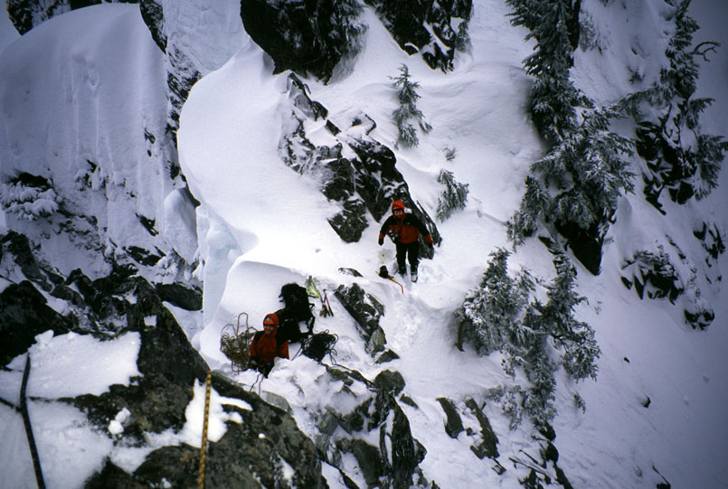
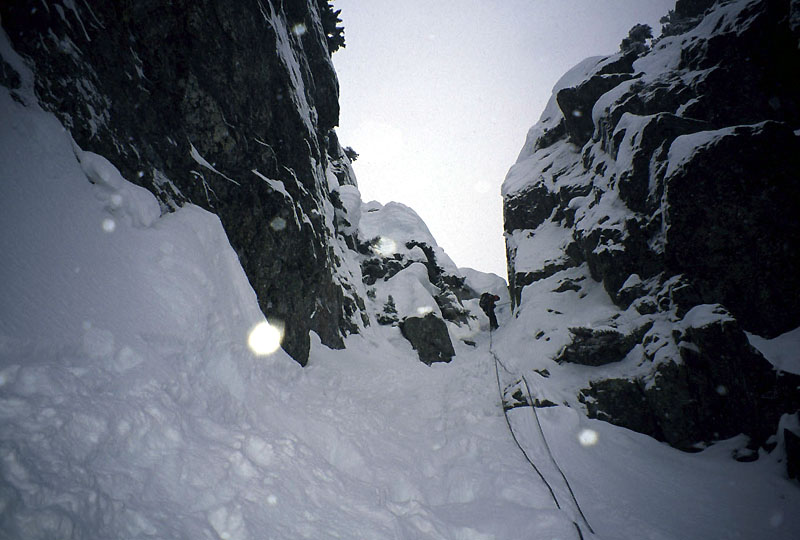
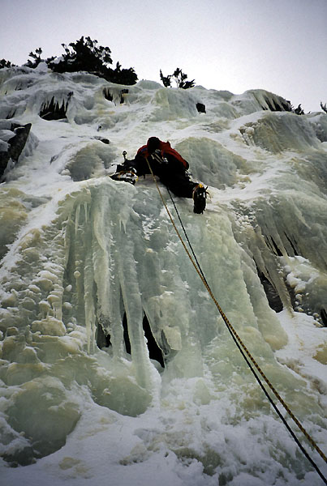
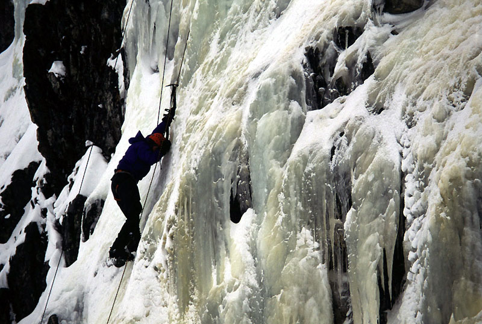
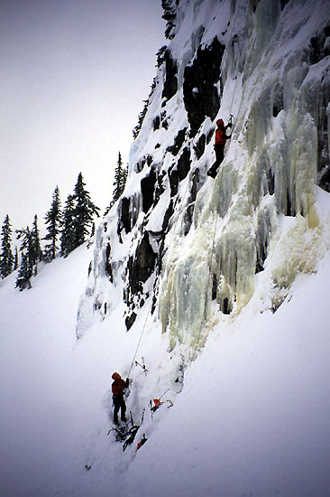
Mount Si, Feb 13, 2004}
Theron and I hiked up the old trail to Mount Si before work. It was his first time on that trail. I was worried about missing an important turn in the dark, but it was light enough for me to see. We had fun hiking up, then on a whim decided to climb the haystack. Neither of us had ice axes, but I had “instep” crampons (for icy streets and sidewalks!) and Theron had his full alpine crampons. It was a good mix of dry rock and crusty snow. It took two hours to the summit, where we admired great views of Seattle and Mt. Rainier. Getting down was tough, the footing on icy ground was kind of insecure without front points. Theron kicked a few steps for me on the lower section. Anyway, the “instep” crampons were really great for the icy upper mile of the trail. We headed down, exciting about some climbing for the next day.
Cougar Mountain, Feb 5, 2004}
Ran 7 miles this morning after meeting Robert here. He is in much better shape, left me in the dust. But we met later near Wilderness Peak. I continued to near Doughty Falls, then went through this “Shy Bear Marsh” to get back, in a big figure 8 loop.
Crystal Mountain Skiing, Feb 1, 2004}
Robert, Josh and I went skiing (snowboarding for Robert). It was great. I did some more black diamond runs, and Josh taught me about skiing down the fall line more aggressively. I think I got the message near the end of the day, and am excited to work on it more. I added it up, we descended over 12,000 feet and skied 10 miles! That is really neat to be able to cover so much ground. We saw Bob and Mardi in a freak meeting. We also saw Mark Haley, which was awesome. Aidan was off shredding the backcountry or somethin’.
Steven’s Pass Skiing, Jan 25, 2004}
More skiing for me n’ Kris. Kris really got out on the blue runs today: Rock n’ Blue, Broadway, then Hagen Hill and off to the backside. Conditions were tougher there, as the Gemini run was ungroomed. She fell and we couldn’t get her skis back on, until I realized that this contraption had to be locked down. We bailed from the lower part of Gemini for a fun road ski on Outer Limits, which was a good idea. Then we hurried back to the front on Skid Road and Promenade. She was almost late for her lesson! I kind of wore her out with that ambitious itinerary. Sorry dar! While Kris took a lesson, I skied down Orion, much like the week before. I was getting excited to ski down along the long lift, but a look at my watch convinced me otherwise, so I did Aquarius Face, which was pretty “skiied out,” and difficult for me. I fell and lost a ski in the deep snow! After 10 minutes of searching in the deep snow, I found it. I then re-connected with Orion and Gemini to the base, then screamed down Crest Trail to meet Kris. We rested a good while and ate. Then off to International, then Skyline. I took a steeper line down that, then did the black diamond Exibition variation, which was great. We were now very tired…
Cougar Mountain, Jan 22, 2004}
I’d long wondering about trail running, and a gut-busting Indian Food meal the night before with Kris and Theron convinced me it was time to step up to the plate. I forgot my headlamp, so I had to wait until 7:15 to start, but I parked at the Squak Mtn. Connector Trail (I mistakenly thought it was the Wilderness Creek trailhead, which would cause hilarity later when I finished my “loop.” Of course, I didn’t have a map either!). I used the “50 Trail Runs in Washington” book to chose a course. I altered that books course to shorten the 14 mile run to about 11 miles by truncating the loop at Clay Pit Road.
This was more fun than I expected it to be. Especially with music! The sunrise was awesome, with a golden Mt. Rainier and pink sky visible from Wilderness Peak. I really enjoyed running along the trail. My truncated loop took me 2.5 hours. It was hard to keep track of all the junctions, but the signs were good. I’m going to be pretty sore I think! Looking forward to some more of this…
Steven’s Pass Skiing, Jan 18, 2004}
Kris and I went skiing Sunday. It was snowing moderately, probably good because conditions were icy before. We did the green run a few times, then a blue run (Broadway), then she had a lesson while I went to the “backside.” I went down Gemini, then Orion, which was my first black diamond run by myself. No falls! Although it tired me out. I screamed back to the front because her lesson was over. We ate lunch, then I skied down “Showcase” - I really like that run, I think it is my favorite blue run, as the angle is constant and steep enough for a great view of the area below. We did Rock n Blue and then Skyline together, which was really fun - she had already improved! But now she was beat, so she skied to the car and I got in two more quick runs. First “Parachute 1,” this was too steep and narrow for me to do well. I nearly fell on a broken beer bottle in the middle of the run! Then I did the black diamond variation to “International,” which was great.
Index Climbing, Jan 16, 2004}
Peter and I each led “Steel Monkey,” a great C1 aid climb easiest with thin nuts. The sun came out for a while, and there was some rock fall at the Quarry.
Mt. Catherine Loop, Jan 11, 2004}
Josh, Dan, Peter and myself had most of the day for some nordic skiing. The Mt. Catherine Loop seemed like a good idea, with some trail-less navigation to Nordic Pass. We managed to fit all four of us with skis in my car, and drove to the pass. Peter and Dan had beefy AT gear, while Josh and I had long tele skis and leather boots. We skinned up into a foggy area, and ended up going a mile the wrong way on a groomed road. We figured that out, then set off on a snowshoe trail to reach Frog Lake. Dan got a blister and we scrounged some duct tape for him from rips in my battered shell jacket. Continuing southwest on a compass bearing, we made for Nordic Pass, fighting the occasional problem with skins, bindings, etc. Time was speeding by, and we almost turned around below the pass, as the low visibility and casual nature of our travel made us wonder if we were all turned around somehow. But we were mostly on track, hitting the pass just a bit to the north where a great view of Silver Peak appeared briefly in the fog. Josh and I hiked down about 100 feet to the pass - steep terrain in dense trees that Peter and Dan managed to ski. Getting down from the pass was an adventure. I suffered numerous face-plants, eventually learning to side-step and traverse the difficulties. Josh gave up and hiked! We had some time in the sun, then went south over Windy Pass and took a long coasting ride on a road. My skis with their scales seemed to be the slowest. We spent a long time on nearly-level terrain to get back to the car. Dan was worried about being late, so we hurried quickly back to the Sound.
It was a fun day with lots of laughs!
Crystal Mountain Skiing, Jan 10, 2004}
Bob, Mardi, Kris and I went here for a great day of skiing. Kris took a lesson and improved her ability. Bob and Mardi led me down a black diamond run called “Sunshine,” that was fun-slash-scary! Kris and I went down the long “Queens” run together and I took a detour on the “CMAC” run near the bottom. Bob and Mardi led me up another chairlift that only had double-black-diamond runs to get down! We did a long traverse into a bowl, and headed straight down that. This one was too steep for me and I crashed a few times. Finally I had to do kick turns to make it down! A few more blue runs finished out the day. I was really sore Monday!
Franklin Falls ice climbing, Jan 5, 2004}
Dan Smith and I got a late start from town and began hiking up the snow-covered road to Franklin Falls near Snoqaulmie Pass. It was a pleasant 2.5 mile hike, first on road then trail, mostly level. We reached the falls which had a lot of water coming down, but there were some great curtains of ice mostly to the left. We saw a variety of ideas, imagining setting up top ropes after a lead.
It looked easy enough for me to lead, so Dan belayed me up some ice steps. Solid ice screws provided protection low on the route.
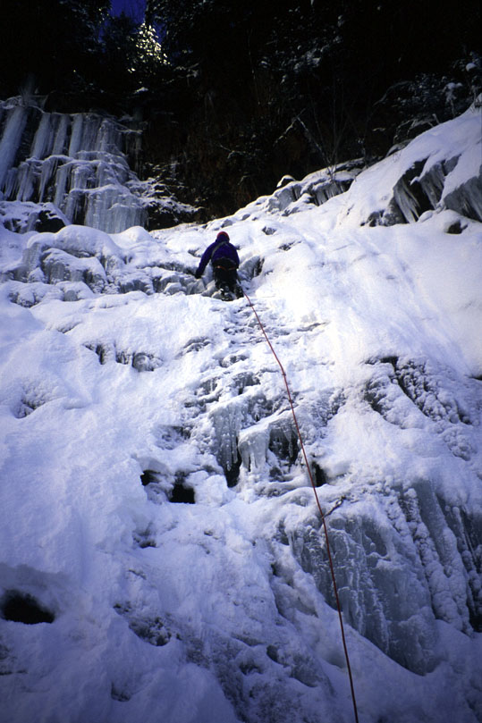
There was running water behind the curtain of ice I climbed, and sometimes I would break through the ice and see water spraying inches from my face! About 50 feet up, the ice ran out, and there were some scary moves on dripping rock under snow. I was able to place a sawed-off knifeblade piton here. Traversing left, I reached an ice pillar and placed a screw. I decided against climbing it, as the top out looked like evil vertical brush under a thin layer of snow. Also, the ice was brittle. Later I realized I had dulled my tools by hitting rock under thin ice, so it wasn’t necessarily that brittle, but dull tools cause it to fracture. So I traversed left, then went up an interesting ramp of ice mushrooms. Near the top of the ramp, I hurried to avoid spray from a secondary waterfall. I reached an alcove, and after some experimentation, made a belay by slinging a large ice pillar. We had imagined climbing this pillar to trees 20 feet above, but the pillar terminated in a ceiling and would provide some overhanging climbing we didn’t feel like doing! Funny how much easier it looked from below…
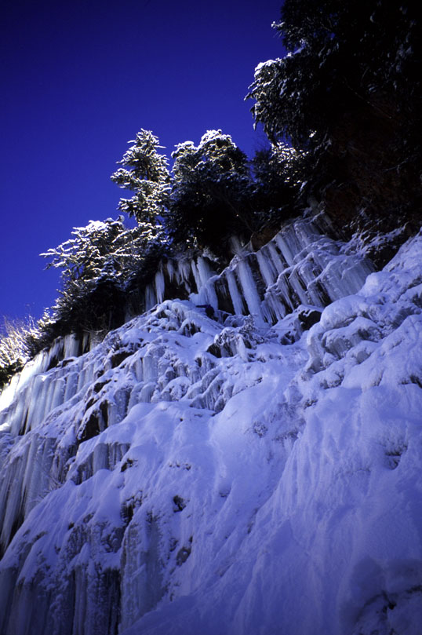
Dan came up. He enjoyed the climb quite a bit. It was almost a full rope length, with decent protection and varied terrain. In honor of an event Dan and I shared the day before, I’d call the route “Bald Tires” - WI3. Bring stubbies and pitons.
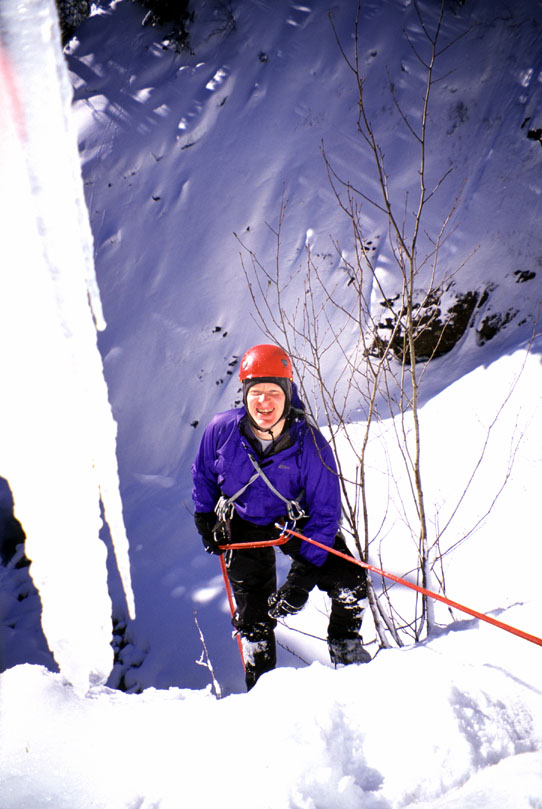
with a piton backup, a 60 meter rope was required to touch down.
We bouldered around for a while, then headed home. Many hikers were coming in, and we had been an object of attention for various parties of two and three. “Are the ice climbers still there?” queried one breathless young woman as we hiked out. Good times!